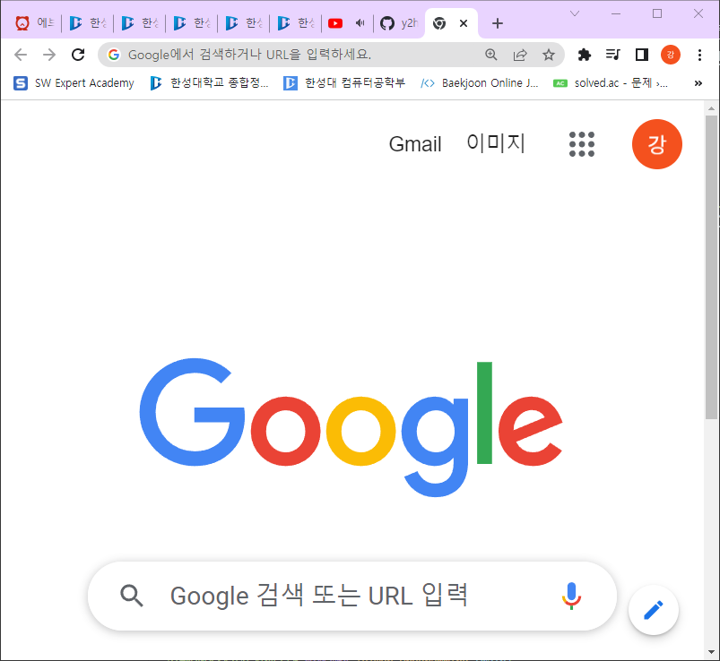

웹 브라우저 소개
브라우저라고 불리기도 하는 웹 브라우저(Web Browser)는, 사용자에게 웹 서버 컴퓨터에 접속하고 웹 페이지, 이미지, 동영상, 음악 등 다양한 데이터 다운받아 보여주는 소프트웨어이다.
그림 1-2
는 대표적인 Chrome 웹 브라우저를 보여준다.

그림 1-2 구글 Chrome
웹 페이지는 브라우저에 HTML5 문서임을 알리기 위해
그림1-3
과 같은 코드를 첫 라인에 삽입하여야 한다.
<!doctype html>
<html>
...
</html>
그림 1-3 HTML5 문서 구성